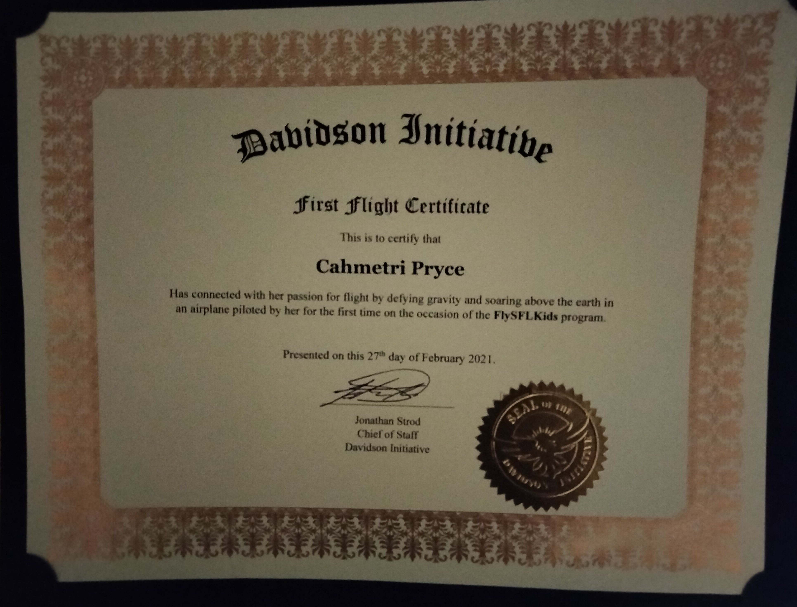
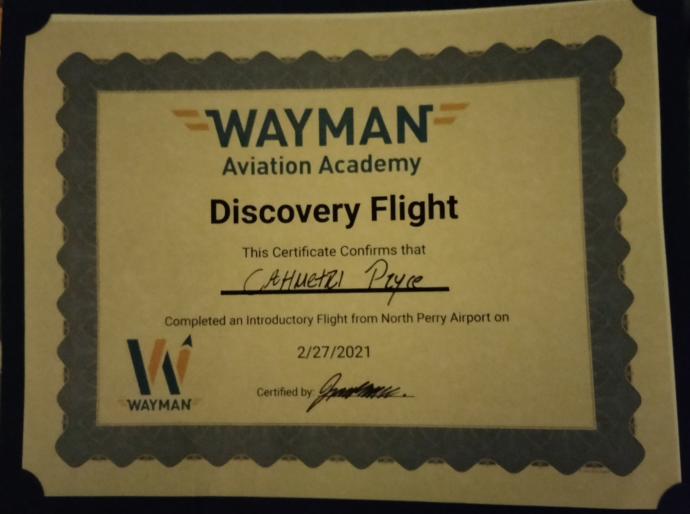
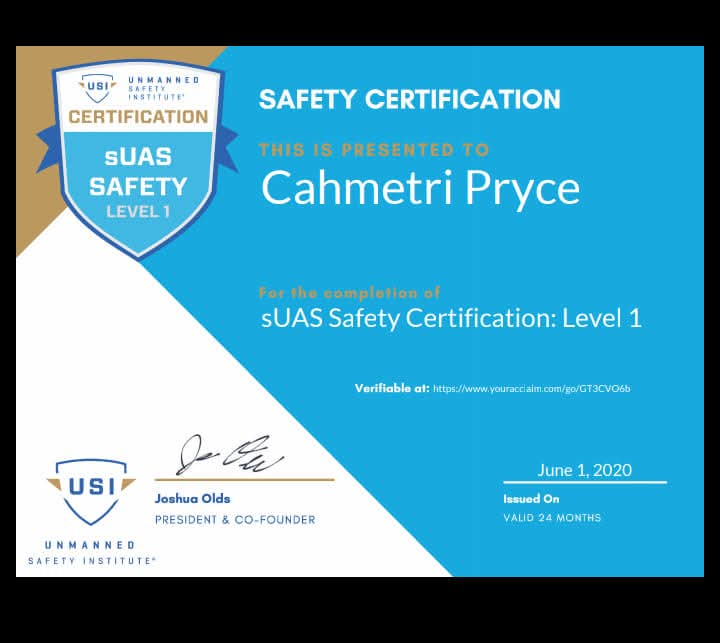

My Skills
These are some of the skills I have developed over the years of experience:
| Skills | Why It Matters | How I apply |
|---|---|---|
| Teamwork | Builds trust and boosts overall productivity by encouraging collaboration and communication within teams. |
|
| Work Ethic | Ensures consistent quality and reliability that teammates and clients can count on. |
|
| Adaptability | Keeps projects moving when plans suddenly shift |
|
| Critical Thinking | Prevents costly mistakes by uncovering root causes and identifying the best path forward. |
|
Certifications



×